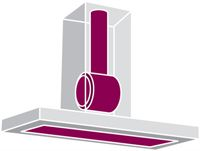
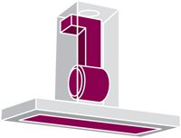

Scurta descriere
Hota Akpo WK-4 Nero 60 Negru, 60 cm, Capacitate: 320 m3/h, doua spoturi cu halogen
Hota Akpo WK-4 Nero 60 este conceputa pentru a elimina mirosurile din timpul gatitului. Ea este iluminata independent cu doua leduri si dispune de trei trepte de viteza pentru o eveacuare puternica. Filtrul de carbon este optional.
Hotele cu extractie
Hotele cu extractie atrag fumul si retin vaporii in filtru, eliminand mirosurile in afara printr-o teava de ventilare. Daca bucataria Dvs. poate fi echipata cu o teava pentru extragerea aerului, aceasta este cea mai potrivita alegere, deoarece veti folosi la maxim puterea de extragere a hotei.
Hote de recirculare
Hotele de recirculare atrag aerul si aburul, il filtreaza si il returneaza in bucatarie. Daca nu puteti alege varianta cu extractie, atunci hotele cu recirculare sunt varianta potrivita pentru Dvs. In acest caz aerul este atras intr-un filtru de carbune care retrage mirosurile neplacute cauzate de gatit, iar aerul curat este eliberat din nou in bucatarie. Hotele cu recirculare sunt usor de instalat si sunt de obicei folosite in apartamentele de bloc, unde este greu sa instalati o gura de ventilare. Hotele cu extractie atrag fumul si mirosul in filtru si le elimina prin tunelul de ventilatie. Filtrul de carbune trebuie schimbat o data sau de doua ori pe an, in functie de cat de des este folosita hota.
Hota Akpo WK-4 Nero 60 este conceputa pentru a elimina mirosurile din timpul gatitului. Ea este iluminata independent cu doua leduri si dispune de trei trepte de viteza pentru o eveacuare puternica. Hota WK-4 Nero 60 este un model cu cos, cu o latime de 60 cm, in negru. In cateva ore consuma 320 m3 de aer deteriorat. Acest model este controlat electronic cu butoane, are o viteza de 3.Aparatul este echipat cu doua spoturi cu halogen, fiecare cu o putere de 35 W. Modelul poate functiona fie extras sau absorbi. De operare Hood in circuit deschis atrage afara, apa calda si mirosurile care sunt produse in timpul gatirii. Intr-un circuit inchis si aerul este saturat cu filtrat si sa intors in camera. Pentru a modului de operare este necesar pentru a absorbi achizitionarea si instalarea filtrului de carbon.